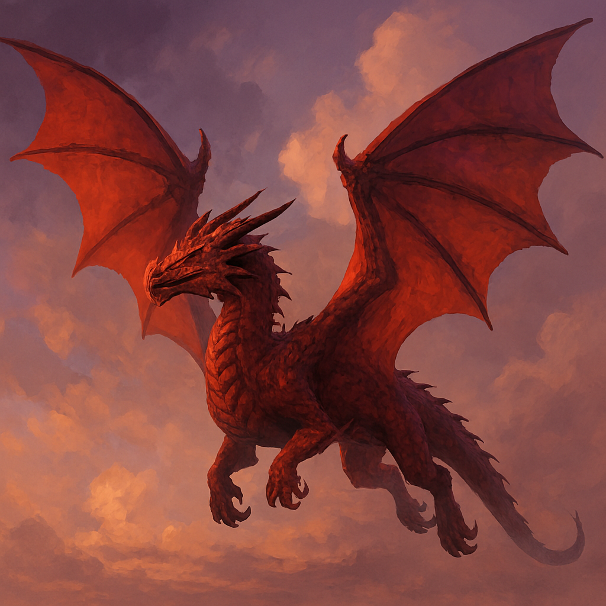

Wings Above Wonder
Posted on November 6, 2025 · Category: TAOLB Stories

It had been a long day. Twelve year-old Lukey Buke rubbed his eyes, tossed his backwards ball cap onto the nightstand, and gave a sleepy smile to Tibbin, his blue teddy bear. Koda, was already curled up at the foot of the bed. “Good night, guys,” Lukey mumbled, pulling the blanket over his rocketship pin and drifting off fast.
The Golden Field
Lukey opened his eyes to sunlight. But it wasn’t morning, it was something else. He was standing in a golden grassy field that stretched forever. The sky shimmered with soft clouds and distant hills. Everything felt warm, quiet, and strange.
Then he saw it. A shadow in the sky. Wings. Something flying fast and low.
Lukey ran toward it, heart pounding. As the shape grew closer, he saw crimson scales, a long tail, and fire colored eyes. It was a dragon. A red dragon.
“Whoa…” he whispered.
He chased it. Then it turned. The dragon dove toward him, wings cutting the air. Lukey turned to run, but it was too fast. A gust of wind knocked him off his feet. He hit the grass, breathless, staring up in fear.
The dragon hovered above him, eyes glowing. Then it spoke.
"Don’t be afraid."
Lukey blinked. The voice was deep, but kind. The dragon’s gaze softened. And just like that, the fear melted into wonder.
Back to Bed
Lukey woke up with a gasp. The room was quiet. Moonlight spilled across the floor. Tibbin was still tucked under his arm. Koda snored softly nearby.
Lukey sat up, wide eyed. “Tibbin,” he whispered, “I met a dragon. His name is Dras.”. Tibbin Smiled.
And somewhere in the dream world, Dras flew on, waiting for the next time Lukey would return.
Love this story?
Get a brand new TAOLB adventure delivered to your inbox every week for free! Join Lukey Buke and his friends as they explore expressive learning, emotional growth, and wild intergalactic surprises.
📬 Get Free Weekly Stories